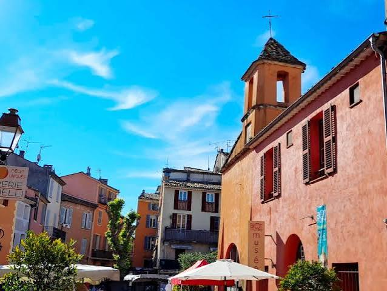

Un village perché connu pour sa verrerie artisanale aux bulles caractéristiques, à deux pas d'Antibes.
À découvrir à Biot

Verrerie de Biot (démonstration)
Gratuit
En savoir plus →
Atelier soufflage de verre
Payant
Réserver →
Musée National Fernand Léger
Payant
Réserver →